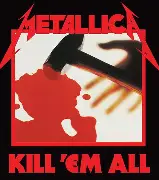
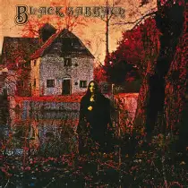
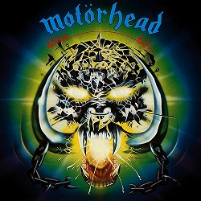
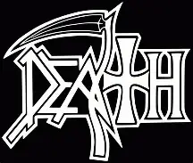
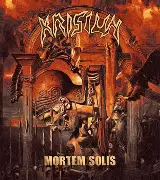
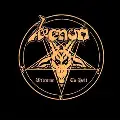
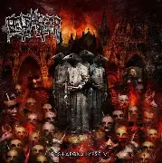
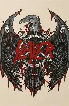

O trash advem do punk rock, atravéz de bandas que se tornaram
tão rapidas e extremas que se tornaram outro estilo.
O Metallica, foi uma das bandas fundadoras do estilo estreando o
album kill 'em all.

O Slayer é um caso onde o estilo do punk hardcore, foi mantido
mesmo após ter entrado no estilo do metal ela continuo a filosofia
da velocidade extrema e vocais rasgados.

O Black Sabbath foi o fundador do estilo, unindo diferentes estilos de
blues e ao ser escutado por um critico, disse que ouvir a Black Sabbath
é como escutar um metal pesado sendo arrastado e ai se utilizou para
definir um estilo heavy metal.
O Black Sabbath, foi a banda precursora de todo que conhecemos como
metal, foi o start para bandas consagradas como Metallica, Slayer e
outras.

O Motorhead, incialmente era uma banda de rock, que ao deixar ses estilo
mais pesado e colocando pedal duplo em suas musicas ela se tornou uma banda
de heavy metal.

Diferente de alguns de seus irmãos, não existe um consenso sobre o seu
fundador, mas, o que pode-se caracterizar seria que o estilo usa de vocais
guturais e andamentos altos.
O Death foi a primeira banda de death metal que não utilizou de temas gore
o seu fundador buscou fazer letras com temas mais existencias, que foi uma
novidade no estilo e também, foi a precursora a utilizar instrumentais mais
mais técnica.

O Krisiun é de uma vertente do death metal, o brutal death metal, que busca
mais velocidade e o uso de tons mais graves e de blast beats na bateria.

O Black Metal surgiu logo após o heavy metal, onde buscava apenas estilos
mais sujos, surgiu com o Venom. Após isso teve a segunda onde o black metak
norueguês com o Mayhen, que incorporou no seu som o estilo Brutal Death Metal.
Foi a banda precursora do estilo, servindo de inspiração para a segunda
onda com o Mayhen.

O Belphegor, une dois estilos de metal, o Black e o Death metal, o resultado
o resultado é um som denso, sujo e pesado.

| Trash Metal | Heavy Metal | Death Metal |
|---|---|---|
 |